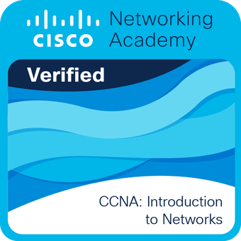

Infraestructura tecnológica que simplemente funciona.
Diseñamos, instalamos y mantenemos soluciones de conectividad, redes y seguridad para hogares, oficinas y negocios.
Nuestros Servicios
Soluciones integrales para tu infraestructura
Redes e infraestructura
- Diseño e instalación de redes.
- Cableado estructurado.
- Routers y switches.
- Segmentación de redes.
- Soluciones Wi-Fi eficientes.
- Optimización de infraestructura.
- Servicio técnico para solución de problemas.
Seguridad
- Videovigilancia integral.
- Instalación de cámaras IP.
- Configuración de NVR/DVR.
- Acceso remoto.
- Integración de seguridad.
Servicios tecnológicos
- VPN y acceso remoto seguro.
- Servidores y almacenamiento.
- Diagnóstico especializado.
- Mantenimiento preventivo.
- Soporte tecnológico continuo.
- Consultoría tecnológica.
No solo instalamos. Diseñamos.
Una red, un sistema de seguridad o una infraestructura tecnológica no debería ser solamente un conjunto de equipos conectados. En MAPA, diseñamos cada instalación considerando las necesidades actuales, la seguridad, el rendimiento y el crecimiento futuro. Pensamos primero en la solución y después en los dispositivos.
Metodología
Cómo trabajamos
Diagnóstico
Entendemos las necesidades a fondo y revisamos meticulosamente la infraestructura existente.
Diseño
Proponemos una solución adecuada y escalable adaptada al espacio, presupuesto y crecimiento esperado.
Implementación
Instalamos, configuramos y probamos exhaustivamente cada uno de los componentes.
Entrega
Documentamos toda la infraestructura y dejamos una solución organizada, limpia y mantenible.
Soporte
Seguimos disponibles y a tu lado para mantenimiento, soporte técnico y futuras ampliaciones.
Respaldo Técnico
Ingeniería detrás de MAPA
Combinamos la formación especializada en redes con experiencia práctica en la implementación y mantenimiento de infraestructura tecnológica real.
Nuestro enfoque parte de entender cómo debe funcionar una infraestructura como conjunto: conectividad, redes, seguridad, equipos y usuarios deben trabajar de forma integrada, confiable y preparada para crecer.
Formación certificada por Cisco

Casos de Estudio
Proyectos destacados
Renovación de infraestructura de red para edificio residencial
La infraestructura de red existente requería una renovación para mejorar la conectividad de los departamentos y proporcionar una base confiable para la atención de incidencias y mantenimiento.
Se realizó el recableado de la infraestructura de red del edificio, incluyendo instalación, configuración y pruebas de velocidad para verificar el servicio de cada piso y departamento.
Posteriormente, mantenemos con el cliente un esquema de acompañamiento mensual para mantenimiento preventivo, atención de incidencias y resolución de problemas relacionados con la infraestructura de red.
También se brinda apoyo a la administración durante intervenciones realizadas por los proveedores de servicios, supervisando técnicamente los trabajos bajo demanda.
El edificio cuenta con una infraestructura de red renovada y verificada, junto con un punto de contacto técnico para la administración. El acompañamiento continuo permite atender incidencias, supervisar intervenciones de terceros y mantener la infraestructura en condiciones adecuadas.
San Antonio Buenavista, Estado de México. Septiembre 2026.
Infraestructura de red personalizada y sistema de seguridad
El domicilio contaba con diferentes áreas que requerían conectividad estable, incluyendo espacios interiores, oficinas y áreas exteriores. También era necesario integrar dispositivos de seguridad y habilitar acceso remoto a determinados equipos.
Se diseñó e implementó una infraestructura integral de red utilizando enlaces de fibra óptica para conectar diferentes secciones del inmueble y cableado Cat6 en interiores.
Se instaló un rack central de comunicaciones con router y switch de 24 puertos para administrar la infraestructura. También se desplegaron aproximadamente seis puntos de acceso inalámbricos estratégicamente distribuidos y un punto de acceso exterior de amplia cobertura.
La infraestructura de seguridad incorporó tres cámaras exteriores. Los servicios fueron organizados mediante segmentación VLAN para separar los dispositivos de seguridad de los dispositivos de uso común.
Para la zona de oficinas se incorporó un segundo switch con conectividad de 2.5 Gb/s, enlazado con la infraestructura principal. También se implementó un nodo VPN para habilitar acceso remoto a determinados dispositivos y recursos.
Actualmente proporcionamos mantenimiento preventivo y acompañamiento técnico periódico.
El inmueble cuenta con una infraestructura de red centralizada, segmentada y preparada para crecimiento, integrando conectividad inalámbrica, enlaces de fibra óptica, oficinas, videovigilancia y acceso remoto dentro de una misma arquitectura.
Cacalomacán, Toluca, Estado de México. Julio 2026.
Infraestructura de red y seguridad para edificio residencial
Se requería establecer una infraestructura centralizada para proporcionar conectividad y videovigilancia a un edificio de departamentos, dejando preparada la instalación para futuras necesidades de automatización y monitoreo.
Se instaló un gabinete de comunicaciones equipado con switch PoE, router del proveedor de servicios y supresor de picos. La infraestructura permite centralizar la conectividad del sistema de videovigilancia y habilitar el servicio de Internet para los departamentos.
El sistema de seguridad contempla cámaras interiores y exteriores, utilizando soportes de herrería fabricados a medida para las instalaciones exteriores, considerando resistencia y durabilidad.
La infraestructura se diseñó con capacidad de crecimiento para futuras aplicaciones, incluyendo posibles sistemas IoT para monitoreo de medidores de agua y otros dispositivos.
Se proporciona además acompañamiento y mantenimiento preventivo de manera mensual.
Se estableció una infraestructura centralizada y escalable para conectividad y seguridad, proporcionando una base para futuras aplicaciones de automatización y monitoreo del edificio.
Toluca Centro, Estado de México. Julio 2025.
Infraestructura integral de red y seguridad para domicilio
El domicilio requería ampliar su cobertura de red y videovigilancia, mejorar la infraestructura de conectividad y contar con una arquitectura que permitiera incorporar nuevos dispositivos de seguridad e IoT.
Se instaló un sistema de videovigilancia con cuatro cámaras, dos interiores y dos exteriores. Para las cámaras exteriores se fabricaron soportes de herrería a medida y se implementó cableado exterior para conectarlas con la infraestructura principal.
También se instaló un gabinete protegido contra la intemperie con un switch para alimentar las cámaras y distribuir la conectividad.
La infraestructura de red fue ampliada mediante un router propio conectado al servicio del proveedor de Internet, proporcionando mayor control y capacidad de crecimiento sobre la red del domicilio.
Como complemento, se instaló un punto de acceso inalámbrico exterior para proporcionar cobertura en el jardín y permitir futuras conexiones de dispositivos IoT y sistemas de seguridad.
Se creó una infraestructura de red y seguridad más organizada y escalable, con mayor control sobre la conectividad del domicilio y capacidad para incorporar nuevos dispositivos y servicios.
Cacalomacán, Toluca, Estado de México. Septiembre 2024.
Sistema de videovigilancia para PYME
El negocio requería supervisar diferentes áreas, incluyendo el exterior, mostrador y almacén, sin realizar una instalación de infraestructura cableada extensa dentro del establecimiento.
Se implementó un sistema de videovigilancia con tres cámaras: una para el exterior, una para el área de mostrador y otra para el almacén. La instalación utilizó conectividad inalámbrica y se realizaron las adecuaciones de red necesarias mediante cableado Cat6 y equipos de conectividad.
Actualmente mantenemos un esquema de atención mensual para mantenimiento preventivo y soporte de la instalación.
El negocio obtuvo cobertura de videovigilancia en sus principales áreas operativas mediante una solución que minimizó la infraestructura física requerida.
Sanbuenaventura, Toluca, Estado de México. Enero 2025.
Sistema de seguridad exterior e interfón remoto para domicilio
El domicilio requería mejorar la supervisión de sus accesos exteriores y contar con una forma de atender el acceso a distancia.
Se instalaron dos cámaras exteriores colocadas en posiciones contrapuestas para cubrir los principales accesos del domicilio. La infraestructura utilizó cableado Cat6 para exteriores y un switch PoE, proporcionando alimentación y conectividad a las cámaras desde un punto central.
Como parte de la solución, se habilitó también la posibilidad de utilizar el sistema de interfón de manera remota.
El domicilio obtuvo cobertura de videovigilancia sobre sus accesos principales y la posibilidad de gestionar el acceso de forma remota, utilizando una infraestructura de red cableada diseñada para exteriores.
Toluca Centro, Estado de México. Enero 2026.
Sobre Nosotros
Profesionalismo y especialización a tu alcance
MAPA es un proyecto independiente especializado en infraestructura tecnológica y sistemas de seguridad.
Trabajamos enfocados en el diseño, instalación y mantenimiento de soluciones de conectividad, redes, videovigilancia y servicios tecnológicos. Nuestro objetivo es brindar un nivel de ingeniería y orden corporativo a proyectos para particulares, oficinas y negocios, priorizando instalaciones limpias, seguras y escalables.
Soluciones personalizadas
Cada instalación parte estrictamente de las necesidades reales y específicas del cliente.
Infraestructura organizada
Diseñamos pensando en facilitar el mantenimiento futuro y permitir el crecimiento ordenado.
Seguridad desde el diseño
La seguridad no se agrega al final como un parche; forma parte integral de la arquitectura.
Acompañamiento continuo
Somos tu aliado técnico de confianza. Seguimos disponibles para mantenimiento, soporte y futuras ampliaciones.
Visión integral
Comprendemos que las redes, la conectividad, la seguridad y los servicios tecnológicos no son elementos aislados; pueden y deben trabajar en sinergia como una sola infraestructura sólida.
¿Tienes un proyecto o necesitas mejorar tu infraestructura?
Ponte en contacto con nosotros para analizar tus requerimientos y diseñar una solución tecnológica a tu medida.